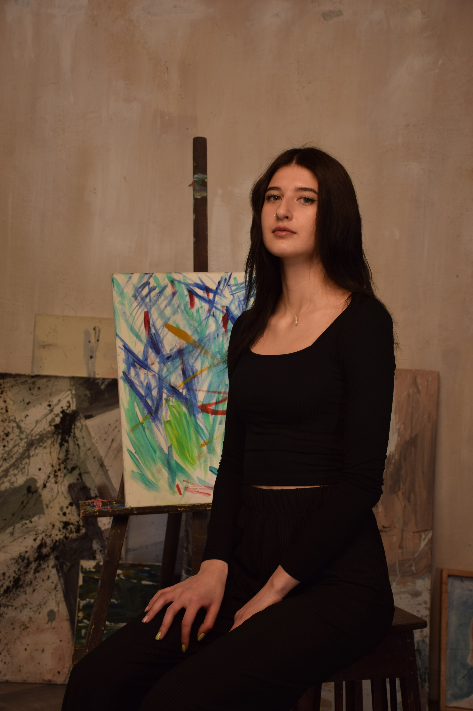

Анастасія Бєлая
Моя освіта
- Закінчила Київський Національний Торговельно-Економічний Університет, маю диплом бакалавра за спеціальністю: Публічне управління та адміністрування.
- Також, закінчила Київський Фаховий Коледж Прикладних Наук, маю диплом молодшого спеціаліста за спеціальністю: Менеджмент.
Досвід роботи
Ajax manufacturers Київ, Україна
Інженер вхідного контролю
- Удосконалення системи якості відповідно до вимог ISO 9001.
- Перевірки постачальників, вхідний контроль матеріалів, контроль якості в виробництво.
- Аналіз існуючих, розробка та впровадження процесів перевірка та оцінка стандартів якості на підприємстві.
- Налагодження процесу моніторингу якості продукції, створення заходів для досягнення цільових показників.
- Здійснення інспекційного контролю постачальників і матеріалів при відвантаженні. Проведення вхідного контролю матеріалів.
- Організація розгляду рекламацій постачальникам. Робота з підбором постачальників.
- Проведення вибіркових перевірок продукції на виробництві та проведення контроль розпакування готової продукції.
Про мене
- національність: українка;
- сімейний стан: незаміжня;
- вік: 23 роки.
Особисті якості:
- відповідальна;
- уважна до деталей;
- швидко адаптуюся до змін;
- надійна;
- працьовита.
Мої хобі:
- спорт: силові тренування та йога;
- туризм: подорожі світом;
- активний відпочинок;
- малювання.